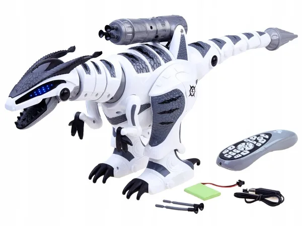

Робот-собака - Индивидуальные возможности: Например, Aibo от Sony - это не просто игрушка, а высокотехнологичный робот, который может выполнять команды, взаимодействовать с пользователями, распознавать лица и адаптироваться к поведению владельца.
Использование в терапии: Роботы-собаки, как Aibo, участвуют в реабилитации пожилых людей и детей с особыми потребностями. Они могут обеспечить эмоциональную поддержку и улучшить социальные навыки.
Обучение и развлечения: Роботы-собаки могут обучаться различным трюкам и играм, что делает их интересными для детей и взрослых. Они могут выполнять команды, такие как "сидеть", "лежать" и "кувырок".
Робот-кошка - Интерактивность: Роботы-кошки, такие как Joy for All Companion Cat, созданы, чтобы взаимодействовать с пользователями, издавая звуки и реагируя на прикосновения. Они могут мурлыкать и двигать ушами, что создает иллюзию живого питомца.
Терапевтическое применение: Эти устройства используются в терапии для пожилых людей и людей с деменцией. Научные исследования показывают, что взаимодействие с роботами-кошками может снижать уровень стресса и повышать общее эмоциональное состояние.
Низкие затраты на уход: В отличие от настоящих кошек, роботы не требуют пищи, воды или ухода, что делает их идеальным выбором для людей, которые хотят питомца без много хлопот.

Робот-динозавр - Образовательная цель: Роботы-динозавры, такие как RoboDinosaurs, проектируются с целью помочь детям изучить особенности поведения и анатомии динозавров. Они могут имитировать движения и звуки настоящих динозавров.
Интерактивные выставки: Эти роботы часто используются в музеях и выставках, чтобы привлечь внимание и заинтересовать посетителей, создавая увлекательный опыт взаимодействия.
Развитие робототехники: Создание роботов-динозавров помогает производить новые технологии и методы в области робототехники, а также в изучении биоразнообразия и эволюции.
Топ-3 самых крутых роботизированных животных последнего десятилетия представлен следующими моделями:
Медуза Рободжелли (Robojelly).
Детеныш тюленя Паро (PARO).
Роботизированные муравьи (BionicANTs).
Узнайте также историю новаторов Робото-Творцов
Синтия Бризил - Искусственный интеллект и робототехника
Основные создатели первых роботов-собак
Компания Sonу
×
Имя Создателя
Информация о создателе.
Как этот сайт вам помогает?
Понимание взаимодействия
Наш сайт учит о взаимодействии между животными и роботами, способы, которыми технологии помогают в уходе за питомцами.
Виртуальные помощники
Вы можете узнать о виртуальных помощниках, которые помогают людям с уходом за животными.
Роботы для безопасности
Исследуйте, как роботы используются для обеспечения безопасности домашних животных.
Технологии в обучении
Узнайте, как технологии помогают в обучении животных различным трюкам и повиновению.
Просмотрите интересный видеоролик обо всех существующих робото-животных


.jpg) Компания Sonу
Компания Sonу